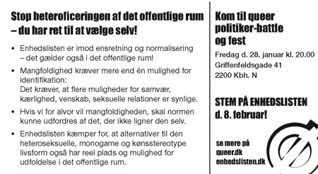

Solidaritetshuset
Griffenfeldsgade nr. 41
kl. 20
Nikolaj,
Miss Fish,
Performance:
Dennis Agerblad,
| dunst recommends this event | 28. Januar 2005 |
|
|
 |
|
| Enhedslistens QUEER FEST og politikerBATTLE! Solidaritetshuset Griffenfeldsgade nr. 41 kl. 20 |
DJ: Nikolaj, Miss Fish, Performance: Dennis Agerblad, |
| Tilbage |